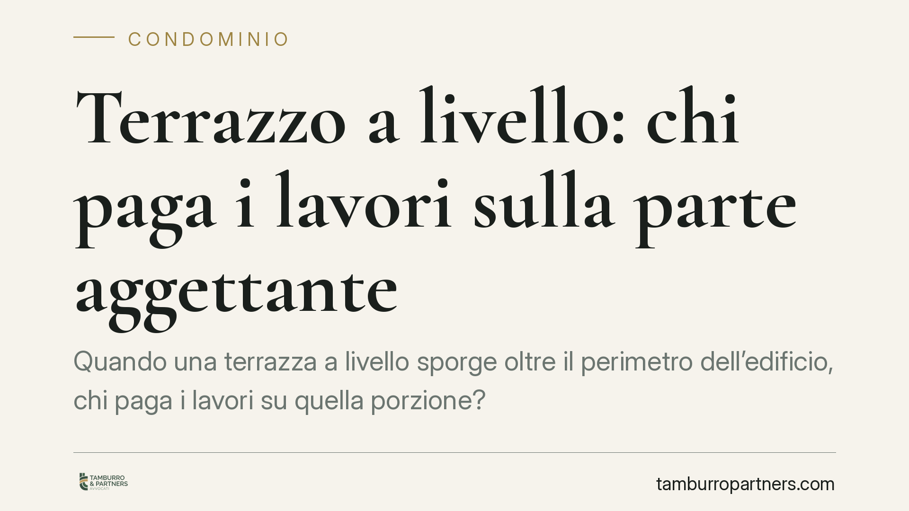

Terrazzo a livello: chi paga i lavori sulla parte aggettante
Quando una terrazza a livello sporge oltre il perimetro dell'edificio, chi paga i lavori su quella porzione? Secondo un orientamento della Cassazione, le spese per la parte aggettante gravano interamente sul proprietario che la usa in via esclusiva. Il riparto condominiale si applica solo alla porzione che funge da copertura. Una distinzione che incide su delibere assembleari e rischi di contenzioso.

Il caso
Una proprietaria dell'ultimo piano disponeva di una terrazza a livello a uso esclusivo. L'assemblea aveva deliberato la ripartizione delle spese di manutenzione tra la stessa proprietaria e i condomini degli appartamenti sottostanti, applicando il criterio proporzionale tipico del lastrico solare di uso esclusivo.
Il punto controverso riguardava la cosiddetta *parte aggettante*: la porzione di terrazza che sporge oltre il perimetro dell'edificio e che, per definizione, non copre alcuna unità immobiliare sottostante. La questione è se anche quei lavori debbano essere ripartiti tra condomini o restare a carico del solo proprietario.
Inquadramento normativo
Il riferimento è l'art. 1126 del codice civile, che disciplina la ripartizione delle spese per i lastrici solari di uso esclusivo. La norma stabilisce un criterio preciso: chi usa il lastrico in via esclusiva sostiene un terzo della spesa di riparazione o ricostruzione; i restanti due terzi gravano sui proprietari delle unità immobiliari cui il lastrico serve da copertura, in proporzione al valore di ciascuna.
Va precisato un aspetto spesso trascurato. Il testo dell'art. 1126 c.c. parla di "lastrici solari": l'estensione del regime alla terrazza a livello a uso esclusivo è frutto di un consolidato orientamento giurisprudenziale, che ha equiparato le due fattispecie in via analogica per identità di funzione. Non si tratta, quindi, di applicazione letterale della norma, ma di una elaborazione interpretativa della Corte di legittimità.
Su questa base si innesta il criterio decisivo: la ripartizione ex art. 1126 c.c. si giustifica solo in quanto la superficie svolga una funzione di copertura dell'edificio. Dove tale funzione manca, viene meno la ragione stessa del concorso nelle spese da parte degli altri condomini.
Il criterio funzionale
La conseguenza è lineare. La terrazza va idealmente scomposta in due porzioni:
- la parte che copre le unità sottostanti: qui opera il riparto un terzo/due terzi;
- la parte aggettante, che sporge e non copre nulla: qui non c'è alcun beneficio per i condomini sottostanti, e la spesa resta interamente a carico del proprietario che ne gode in via esclusiva.
L'applicazione dell'art. 1126 c.c. all'intera superficie, senza distinzione, è quindi scorretta. Il criterio da seguire è funzionale, non geometrico in senso indistinto: conta ciò che la singola porzione protegge, non la sua appartenenza formale a un unico manufatto.
Implicazioni pratiche
La distinzione produce un doppio ordine di rischi, speculari tra loro.
Sul fronte dei condomini sottostanti: una delibera che ripartisca tra tutti anche i costi della parte aggettante li espone a un addebito non dovuto. In tal caso la deliberazione è esposta a impugnazione, perché addossa agli altri condomini spese relative a una superficie che non li protegge.
Sul fronte del proprietario della terrazza: pretendere il riparto su una porzione che non ha funzione di copertura significa rivendicare un concorso altrui privo di fondamento. Anche questa impostazione è vulnerabile sul piano del contenzioso.
Resta ferma la possibilità di deroghe pattizie. Un regolamento condominiale di natura contrattuale, accettato da tutti i condomini, può prevedere criteri di ripartizione diversi da quelli legali. In presenza di una clausola simile, è il regolamento a prevalere sul criterio funzionale di default.
Cosa fare in concreto
- È opportuno verificare, prima di approvare o impugnare una delibera, se il riparto distingue la porzione di copertura dalla parte aggettante.
- Conviene far rilevare da un tecnico le superfici effettive, individuando con precisione quale porzione copre unità sottostanti e quale sporge.
- È utile acquisire un computo metrico che tenga separate le due porzioni, così da ancorare la ripartizione a dati verificabili.
- Va esaminato il regolamento condominiale per accertare l'eventuale presenza di clausole derogatorie di natura contrattuale.
- Per le pronunce citate in assemblea è prudente verificarne gli estremi (numero, anno, sezione) presso fonti ufficiali prima di fondarvi una decisione.
Disclaimer
Contributo informativo a cura di Tamburro & Partners Avvocati. Non costituisce parere legale.
Ogni condominio ha una storia a sé.
Se gestisci un'amministrazione e vuoi un confronto su una specifica questione condominiale, scrivi allo studio. Ti rispondiamo entro un giorno lavorativo.